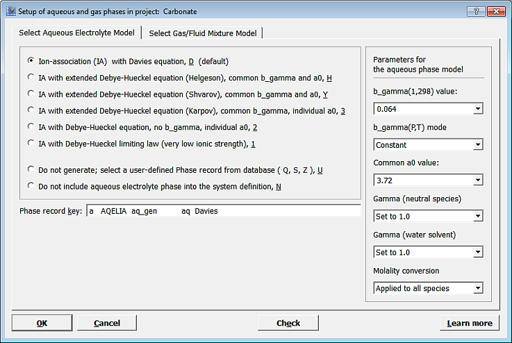
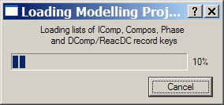

GEM-Selektor
version 3 GEM-Selektor
version 3
GEM-Selektor
version 3 GEM-Selektor
version 3Previous Page Back to Start Page
(6) After giving a name to a new project, you will see a "Selection of databases..." dialog. To proceed, make selections as shown in the screen image below, and click "Next >".
This will select the complete PSI-Nagra chemical thermodynamic database as a basis for your modeling project, and give this project access to SDref records with literature references and template scripts.
After the "Next >" button was clicked, a "Select Independent
Components" Dialog appears:
By clicking toggle buttons
with
element symbols, you can conveniently set up the stoichiometry
basis of
your modeling project and all
chemical systems to be created within it.
Selected
elements, charge, or ligands (Independent Components) are shown as
pressed and
highlighted
buttons.
After you have made a
selection (as shown on the screenshot above) and clicked "Next >", the
GEM-Selektor program
will search default chemical thermodynamic databases (selected previously
in "Selection of databases..." dialog) for
all suitable species
(Dependent Components), phases, and pre-defined
compositions,
and copy all database records found into your new project's database.
During this process, some Phase and Compos records may be discarded; if
needed, the list of those can be found in the "DiscardedRecords.txt"
debugging file located in the same folder where the GEM-Selektor binary
executalbe file exists.
Now, GEM-Selektor will ask you to
select a built-in model for aqueous activity coefficients:

Several
commonly-used activity models were collected into the TSolMod code library
and built into GEM-Selektor. Some of them are listed in the above
radio-button
list; upon selection, some common parameters (shown on the right side)
can
be adjusted. Clicking the "Check" button will update contents of the
dialog,
for instance, the record key of the automatically created definition
for
the aqueous phase.
Details about
built-in calculations
of acitivity coefficients in the latest GEM-Selektor version can be found
in
the
Activity-coeffs.pdf
manual in Gems3-App/Resources folder or on GEMS web site. Other,
built-in aqueous activity models (e.g. Pitzer, SIT) or scripted models of
mixing must be
provided
in advance in Phase definition records in the project database.
The second tab of this dialog can be used for selecting the gas/fluid
mixture
model
(not needed in our present example, where the default ideal gas mixture
will
be used by default).
For
now, just click the "Ok" button; the aqueous phase definition "aq_gen"
using
the Davies equation will be created automatically (all parameters on
the
right side will be ignored in this case). This operation may take some
time; if so, you may see a small progress dialog like that shown below;
just wait until it's finished.
